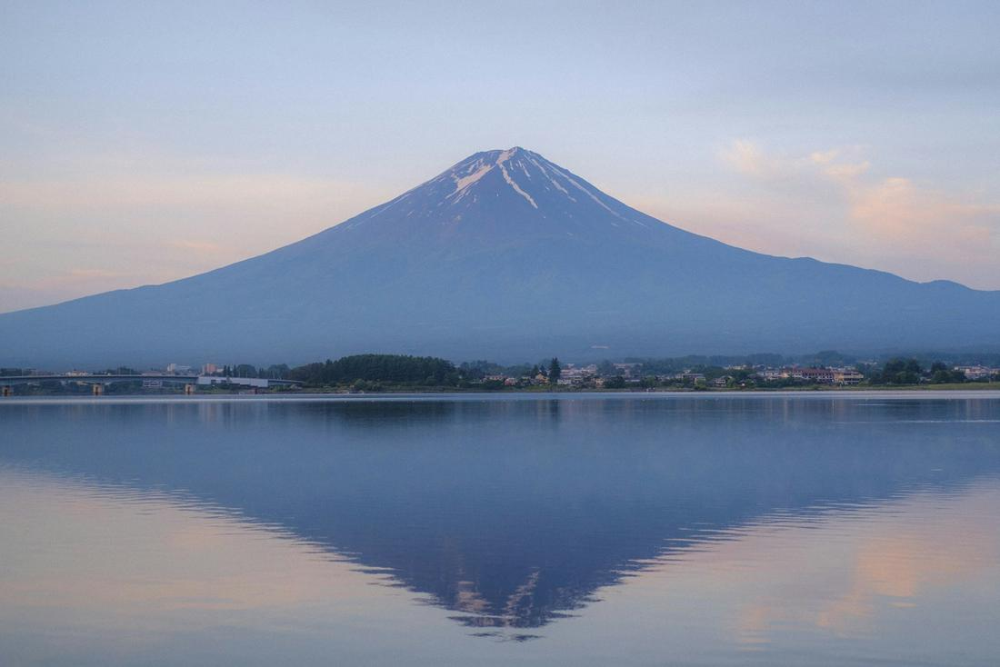
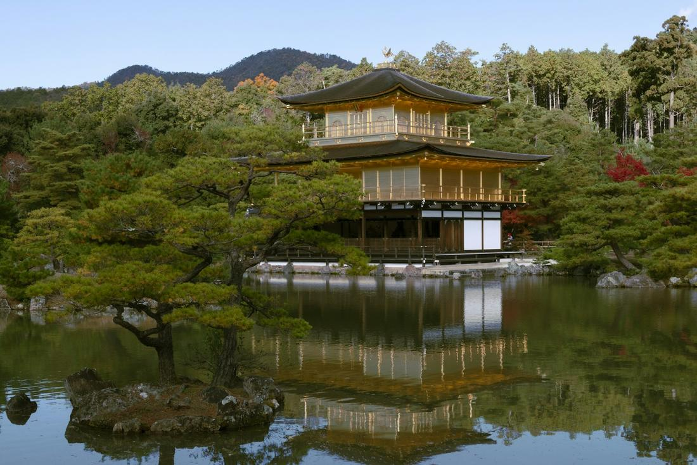

Ancient temples, neon-lit cities, and Mount Fuji, Japan rewards travelers who look closely.
Japan is the destination I send clients to when they want a trip that feels like two or three countries in one - the ultra-modern neon sprawl of Tokyo, the centuries-old temples and geisha districts of Kyoto, and a volcano so perfectly shaped it looks unreal reflected in a still lake. What makes Japan special isn't just the sights, though - it's how effortlessly the trains run, how spotless the streets are, and how genuinely warm the hospitality is, even with a language barrier. It's a country built for first-time international travelers and seasoned ones alike, because it somehow manages to feel both completely foreign and completely easy to navigate.
As your travel advisor, I love building Japan itineraries because the country rewards a slower pace. You don't need to rush between ten cities - a well-sequenced trip through Tokyo, Kyoto, and the Mount Fuji region, connected by the bullet train, gives you an incredible range of experiences without exhausting you. One day you're weaving through the crowds at Shibuya Crossing, and two days later you're standing in near silence beneath a thousand shrine gates or soaking in a hot spring with a mountain view. Photographers, couples, and food lovers especially fall hard for this country.
Here are three excursions I love arranging for clients visiting Japan.

This is the package I build for clients who want the classic 'first time in Japan' experience done right, tracing the country's most iconic sights from Tokyo down to Kyoto. We start in Tokyo, where you'll stand in the middle of Shibuya Crossing, the busiest pedestrian intersection in the world, then find total contrast just a few miles away at Senso-ji, Tokyo's oldest temple, in the historic Asakusa district, where you can shop for souvenirs along Nakamise-dori's covered market street. From there, we board the Shinkansen, Japan's famous bullet train, for the smooth, scenic ride to Kyoto at speeds over 150 miles per hour. In Kyoto, we spend a full day exploring Fushimi Inari Shrine, where thousands of vermilion torii gates form a tunnel that climbs the mountainside, and Arashiyama's bamboo grove, where sunlight filters green through impossibly tall stalks. In the evening, we walk through Gion, Kyoto's historic geisha district, past traditional wooden teahouses where, if you're lucky, you'll spot a geiko or maiko hurrying to an appointment. This itinerary is designed to show you both faces of Japan - the hyper-modern and the deeply traditional - in one seamless week.

This is the package for clients who want to slow all the way down after the pace of Tokyo, and there's no better way to do that than in the shadow of Mount Fuji. We base you around Lake Kawaguchiko, one of the Fuji Five Lakes, where on a clear day the mountain's snow-capped, perfectly symmetrical peak reflects right off the water's surface, especially at sunrise. From there, we head to Hakone, riding the Hakone Ropeway over Owakudani, an active volcanic valley where sulfur vents still steam from the ground and locals boil eggs in the hot springs until the shells turn black (tradition says eating one adds years to your life). We follow that with a cruise across Lake Ashi, where on clear days Fuji appears again in the distance beyond a red torii gate rising from the water. The centerpiece of this trip, though, is the night we spend at a traditional ryokan, a Japanese inn with tatami mat rooms, a multi-course kaiseki dinner, and your own private onsen hot spring soak under the stars. It's the most relaxing 48 hours I build into any Japan itinerary, and clients often tell me it was their favorite part of the whole trip.

This is the package I build for clients who plan their vacations around what they're going to eat, and Osaka is famously Japan's food capital. We start in Dotonbori, Osaka's neon-drenched dining district, working our way through takoyaki octopus balls, okonomiyaki savory pancakes, and fresh sushi, with the glowing Glico Running Man sign lighting up the canal behind you. We tour Osaka Castle, one of Japan's most famous landmarks, its green-and-gold tiled roofs rising above a moat and stone walls dating back to the 16th century. From there, it's a short trip to Nara, where hundreds of wild sika deer roam freely through the park surrounding Todai-ji Temple, bowing for crackers and posing for what might be the best photos of your whole trip. Back in Kyoto, we visit Kiyomizu-dera, a wooden temple built without a single nail, perched on a hillside with sweeping views over the city, and Kinkaku-ji, the Golden Pavilion, a Zen temple covered in gold leaf that seems to float above its reflecting pond. This route is built for travelers who want their itinerary anchored around incredible food, iconic temples, and a few unforgettable animal encounters along the way.